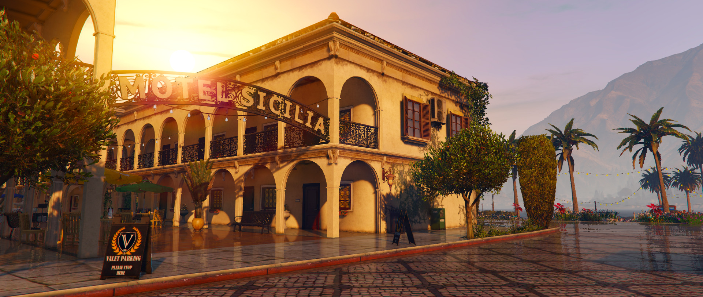

WHO WE ARE
あでぃよんについて:
あでぃよんは、活動者が参加するインターネットバラエティ企画としてスタートしました。ゲーム、クイズ、検証などの企画を立て、制作から運営までを行っています。
出演者同士が交流できる企画づくりに加え、企画に必要なWebページやゲーム内システムの制作も行っています。

ADIYON / PRODUCTION01
企画・制作
ゲーム企画、クイズ、検証、バラエティなどの企画制作・運営。
02
活動者の交流
企画への参加を通じて、普段接点のない活動者同士が交流する機会をつくります。
03
開発
企画に合わせたWebコンテンツやGTA / FiveMの独自システムを開発しています。
GTA / FiveM
ADD:ON
ADYGTAでの運営・開発を経て始まったGTAプロジェクトです。現在はADD:ON ZEROとして、職業、犯罪、住宅、スキルなどの機能を制作しています。
プロジェクトを見る
OFFICIAL WEBSITE
公式サイトへ